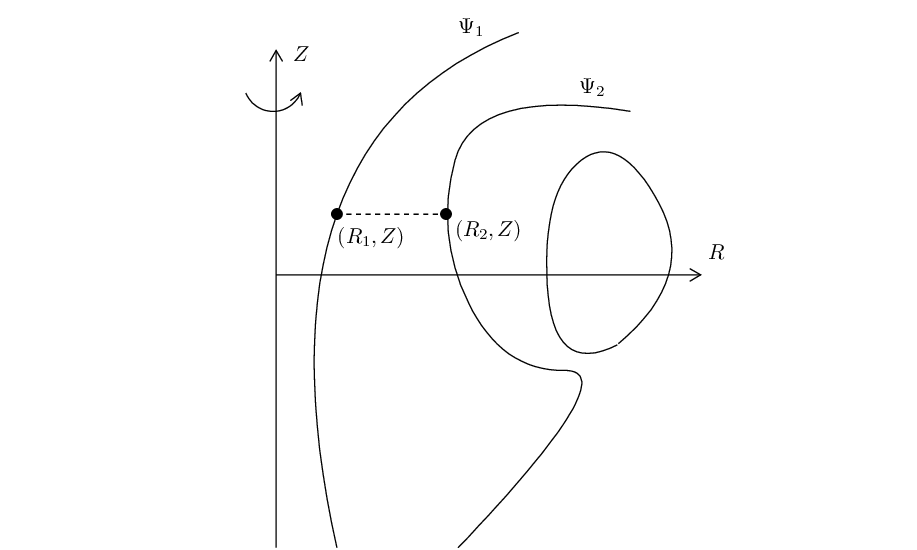
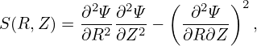

Note that Ψ is defined by Ψ = RAϕ, which is just a component of the vector potential A, thereby having no obvious physical meaning. Next, we try to find the physical meaning of Ψ, i.e., try to find some simple algebraic relation of Ψ with some quantity that can be measured in experiments.

In Fig. 2, there are two magnetic surfaces labeled, respectively, by Ψ = Ψ1 and Ψ = Ψ2. Using Gauss’s theorem in the toroidal volume between the two magnetic surface, we know that the poloidal magnetic flux through any toroidal ribbons between the two magnetic surfaces is equal to each other. Next, we calculate this poloidal magnetic flux. To make the calculation easy, we select a plane perpendicular to the Z axis, as is shown by the dash line in Fig. 1. In this case, only BZ contribute to the poloidal magnetic flux, which is written (the positive direction of the plane is chosen in the direction of )
Equation (20) provides a simple physical meaning for Ψ, i.e., the difference of 2πΨ between two magnetic surfaces is equal to the poloidal magnetic flux enclosed by the two magnetic surfaces. Noting that we are considering the axisymmetric case, the physical meaning of Ψ can also be stated as: the difference of Ψ between two magnetic surfaces is equal to the poloidal magnetic flux per radian. Due to this relation, Ψ is usually called the “poloidal magnetic flux function” in tokamak literature. Note that it is the difference of Ψ between two locations that determines the the physical quantities Ψp, which is consistent with the fact that gauge transformation (14) dose not change the values of physical quantities.